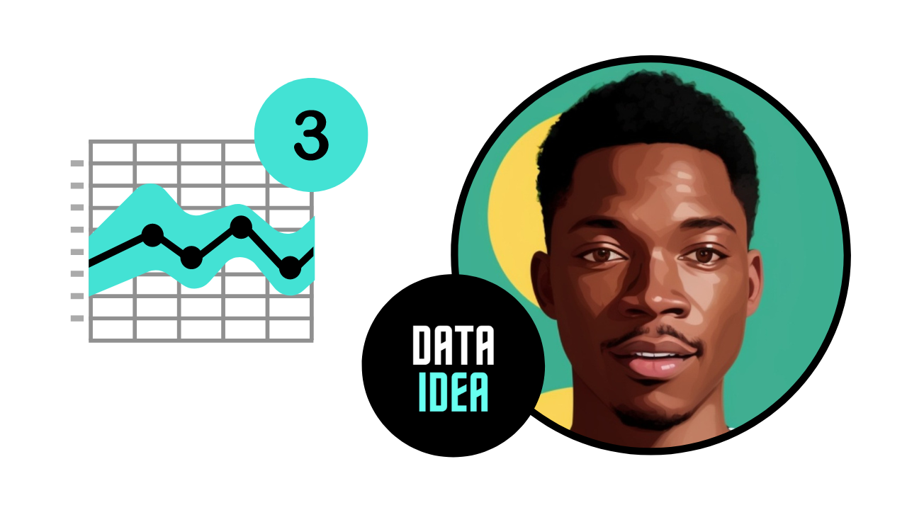

Time Series Forecasting

This is part 3 of our Time Series Analysis Series, Part 2 introduces you to doing time series analysis. The link to part 2 is here
Forecasting refers to the future predictions based on the time series data analysis. Below are the steps performed during time series forecasting
- Step 1: Understand the time series characteristics like trend, seasonality etc
- Step 2: Do the analysis and identify the best method to make the time series stationary
- Step 3: Note down the transformation steps performed to make the time series stationary and make sure that the reverse transformation of data is possible to get the original scale back
- Step 4: Based on data analysis choose the appropriate model for time series forecasting
- Step 5: We can assess the performance of a model by applying simple metrics such as residual sum of squares(RSS). Make sure to use whole data for prediction.
- Step 6: Now we will have an array of predictions which are in transformed scale. We just need to apply the reverse transformation to get the prediction values in original scale.
- Step 7: At the end we can do the future forecasting and get the future forecasted values in original scale.
Models Used For Time Series Forecasting
- Autoregression (AR)
- Moving Average (MA)
- Autoregressive Moving Average (ARMA)
- Autoregressive Integrated Moving Average (ARIMA)
- Seasonal Autoregressive Integrated Moving-Average (SARIMA)
- Seasonal Autoregressive Integrated Moving-Average with Exogenous Regressors (SARIMAX)
- Vector Autoregression (VAR)
- Vector Autoregression Moving-Average (VARMA)
- Vector Autoregression Moving-Average with Exogenous Regressors (VARMAX)
- Simple Exponential Smoothing (SES)
- Holt Winter’s Exponential Smoothing (HWES)
Next part of this article we are going to analyze and forecast air passengers time series data using ARIMA model. Brief introduction of ARIMA model is as below
[ad]ARIMA
- ARIMA stands for Auto-Regressive Integrated Moving Averages. It is actually a combination of AR and MA model.
- ARIMA has three parameters ‘p’ for the order of Auto-Regressive (AR) part, ‘q’ for the order of Moving Average (MA) part and ‘d’ for the order of integrated part.
Auto-Regressive (AR) Model:
- As the name indicates, its the regression of the variables against itself. In this model linear combination of the past values are used to forecast the future values.
- To figure out the order of AR model we will use PACF function
Integration(I):
- Uses differencing of observations (subtracting an observation from observation at the previous time step) in order to make the time series stationary. Differencing involves the subtraction of the current values of a series with its previous values \(d\) number of times.
- Most of the time value of \(d = 1\), means first order of difference.
Moving Average (MA) Model:
- Rather than using past values of the forecast variable in a regression, a moving average model uses linear combination of past forecast errors
- To figure out the order of MA model we will use ACF function